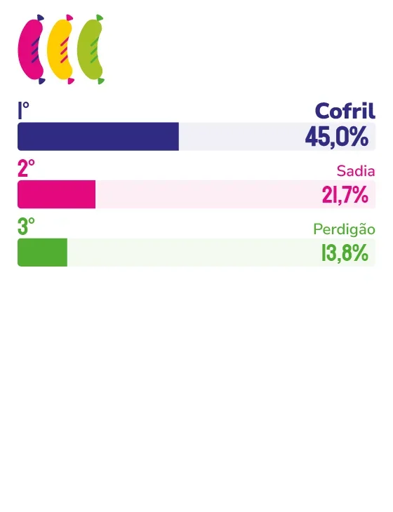

LINGUIÇA E PRESUNTO
COFRIL
Com 39 anos de história e uma fábrica que mudou tudo, a Cofril lidera o segmento de linguiça e presunto na Grande Vitória com vantagem sobre gigantes nacionais, construída churrasco a churrasco, mesa a mesa, geração a geração.
Existem marcas que o consumidor escolhe e existem aquelas que o consumidor reconhece pelo cheiro, pelo sabor, pela memória que vem delas. Assim é com a Cofril, e os capixabas sabem disso melhor do que ninguém.
Com quase 40 anos de mercado e liderança expressiva no segmento de linguiça e presunto na Grande Vitória, a empresa construiu uma posição que vai além dos números. “A marca Cofril ganhou muita notoriedade nos últimos anos, não só nas mídias como também nos encontros das festas, dos churrascos, dos amigos, das famílias”, afirma o sócio-diretor da empresa, José Carlos Correa Cardoso. É no território da mesa farta, do fim de semana em família, do churrasco entre amigos que a Cofril firmou sua presença de forma que nenhum concorrente nacional, por maior que seja, conseguiu replicar.
O segredo, segundo Cardoso, começa antes de o produto chegar ao consumidor. “A proximidade com o mercado, com os pontos de vendas, a constância da presença comercial junto aos clientes, tudo se soma a uma entrega rápida e super pontual dos produtos.” O resultado direto dessa equação é o frescor: produtos que saem da produção e chegam às gôndolas sem perder o sabor que tornou a marca inconfundível. Enquanto marcas nacionais percorrem longas cadeias logísticas, a Cofril chega primeiro e melhor.
Mas foi uma decisão tomada há duas décadas que mudou definitivamente a trajetória da empresa. A construção da fábrica em Atílio Vivácqua representou, nas palavras do diretor, a grande virada. “Ali foi a visão de futuro da administração, que apostou no crescimento da marca, nos investimentos em tecnologia, qualidade e produtividade. A Cofril tem 39 anos no mercado e os últimos 20 anos foram, sem dúvida, anos de expansão em todos os sentidos.” Uma aposta que o mercado confirmou e que os capixabas ratificam toda vez que pensam espontaneamente em linguiça.
O consumidor que a Cofril encontra hoje está mais exigente. Quer sabor, mas quer também qualidade, consistência e uma marca em que confie. Para Cardoso, acompanhar essa evolução sem abrir mão da essência é o grande desafio permanente da empresa. A resposta vem em forma de novos lançamentos previstos para os próximos anos e de um movimento que vai ampliar ainda mais o alcance da marca: a expansão para mercados além do Espírito Santo, mas com o mesmo sabor de sempre.
Sobre o futuro, o diretor não hesita em definir o que sustenta tudo isso e o que não pode mudar. A Cofril vai, segundo ele, continuar investindo em modernização, em processos cada vez mais eficientes, em produtos que surpreendam. Mas existe um compromisso que atravessa todas as décadas e que seguirá intocável: a qualidade que transformou a marca no que ela é hoje. “Sabor a toda prova” não é apenas um slogan, é a promessa que a Cofril renova a cada entrega, a cada churrasco, a cada mesa capixaba.

José Carlos Correa Cardoso
Sócio-diretor da Cofril
“Esse reconhecimento é fruto de um trabalho incessante de presença junto ao mercado, seja na disponibilização de produtos de qualidade, seja nas ações de marketing junto ao público. A Cofril tem 39 anos no mercado e os últimos 20 anos foram, sem dúvida, anos de expansão em todos os sentidos.”
52
